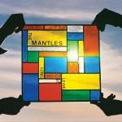

Music Reviews
-

Sic Alps She's On Top
San Francisco’s Sic Alps continues cleaning it up with the 3-song single, She’s On Top.
Sean Caldwell reviews... -
Zomby With Love
His twitter may be a schizophrenic outpouring of insults and arrogance, but now that it finally comes down to facing his criticisms and proving his detractors wrong is he still capable?
From Zomby, With Love xo... -

Eleanor Friedberger Personal Record
With The Fiery Furnaces on indefinite hiatus, Eleanor Friedberger has seized the opportunity to step out as a full-fledge solo artist. But does her latest output really match up?
Andrew Ciraulo reviews... -

Tom Odell Long Way Down
Impossibly fresh-faced cherub releases self-produced, folk-influenced, piano-led, singer-songwriter major label-backed debut album. Oh good. My favourite.
Joe Rivers finds little use for his sharpened knives... -

The Mantles Long Enough to Leave
The San Francisco latest is driven by the simplicity of a jangle tune, bound to a wispy, rhythmic constancy that’s always sustained even as the songs change from uptempo to mid-paced ringing arpeggios.
Juan Edgardo Rodríguez reviews... -
Smith Westerns Soft Will
Smith Westerns' 3rd album has a seasonal sound, but are all summery albums worth a listen? In summary, I surmise some are.
Ben Jones dives in... -

Zen Mantra How Many Padmes Hum?
Australasia continues to be a gold mine in 2013. Zen Mantra is the latest of the conveyor belt, and brings with him a euphoric procession of energetic punk in matrimony with introspective psychedelica.
Carl Purvis reviews... -
Boards of Canada Tomorrow's Harvest
The long awaited return from everyone's favorite enigmatic electronic duo is a chilling, beautiful experience that proves just how timeless and enthralling their trademark aesthetic is.
Peter Quinton reviews another long-awaited comeback album in a year full of long-awaited comeback albums... -
Melt Yourself Down Melt Yourself Down
An album by a British jazz super-group doesn't seem like the obvious choice for a party soundtrack, but Melt Yourself Down are set on proving such assumptions wrong.
Mark Davison hopes to book them for his next birthday, wedding or bar mitzvah... -
Kanye West Yeezus
"Yeezy season approaching, f--- whatever y'all been hearing." Who am I to disagree.
Forrest Cardamenis reviews...